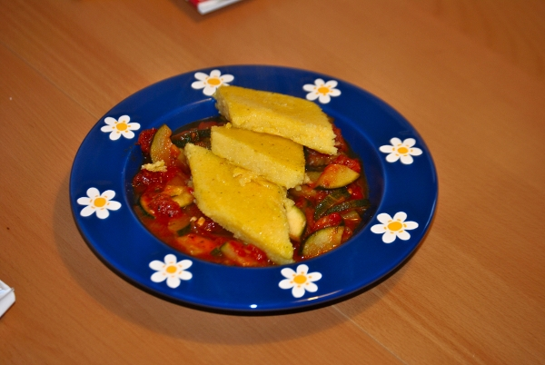

Polenta-Schnitten auf Zucchini

- Vorbereitung: ca. 25 Minuten
- Zubereitung: ca. 20 Minuten
- Für 4 Personen
Zutaten
- 100 g Grana Padano
- 250 g Instant-Polenta
- 1,2 l Gemüsebrühe, instant
- Fett für das Blech
- 2 Zwiebeln
- 2 Knoblauchzehen
- 2 Zucchini
- 50 g getrocknete Tomaten in Öl
- 2 Zweige Rosmarin
- 1/2 Bund Thymian
- 1/2 TL Fenchelsamen
- 400 g stückige Tomaten
- 2 EL Butter
Zubereitung
- Käse reiben. Polenta nach Packungsangabe mit 1 Liter Brühe zubereiten. Käse einrühren. Polenta 2-3 cm hoch auf ein gefettetes Blech streichen, kalt stellen.
- Inzwischen Zwiebeln und Knoblauch abziehen, würfeln bzw. hacken. Zucchini waschen, putzen, der Länge nach vierteln, dann in 5 mm dicke Scheiben schneiden. Getrocknete Tomaten abgießen, das Öl auffangen. Tomaten grob hacken. Rosmarinnadeln abzupfen,
hacken. Thymianblättchen abzupfen.
- Tomatenöl in einem Topf erhitzen, Fenchelsamen, Zwiebeln und Knoblauch darin anbraten. Zucchini und getrocknete Tomatenstücke zugeben, anrösten, mit restlicher Brühe (200 ml) ablöschen. Stückige Tomaten, Rosmarin und Thymian hinzufügen, 10 Minuten
köcheln lassen.
- Polenta in 4x8 cm große Rauten schneiden, in Butter von beiden Seiten ca. 3 Minuten braten. Mit Zucchinisauce servieren.